文字
背景
行間


部活動報告
第63回千葉県吹奏楽コンクール2021 本戦出場決定
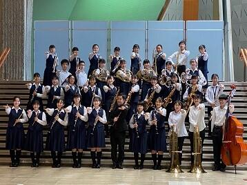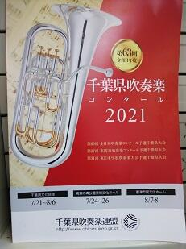
野球部 第103回千葉大会４回戦
野球部 第103回千葉大会３回戦
 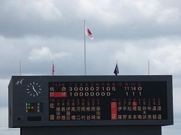
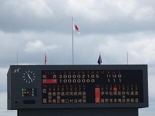
野球部 第103回千葉大会２回戦
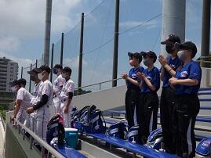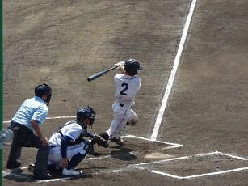
カヌー部関東大会報告
6月12日(土)～6月13日(日)、精進湖カヌー競技場（山梨県）において令和３年度関東高等学校カヌー大会が開催されました。結果、目標としていた総合優勝には手が届きませんでしたが、６種目で入賞、男女総合３位となり、佐倉高校カヌー部の特徴でもあるチーム力を発揮することができた大会となりました。今大会を経験できたことで更なる成長のきっかけとなりました。ご支援いただいた皆様に感謝申し上げます。
男子カヤックフォア 4位 星野(3A)/松戸(3F)/浅田(3F)/岡村(3E)
9位 和田(3B)/長井(2F)/仲森(2D)/中村(1H)
男子カナディアンシングル 5位 小島(3C)
男子カナディアンペア 2位 諏訪部(3F)/神原(3A)
7位 熊谷(3G)/小島(3C)
男子カナディアンフォア 2位 諏訪部(3F)/神原(3A)/熊谷(3G)/小島(3C)
女子カヤックペア 5位 小林(3D)/佐々木(3D)
女子カヤックフォア 1位 小林(3D)/佐々木(3D)/成毛(3G)/寺島(3D)
4位 円城寺(2F)/相澤(2B)/西田(2A)/松村(2D)
男子総合3位 女子総合3位
カヌー部 関東大会出場決定


女子テニス関東大会県予選ベスト８
吹奏楽部第40回定期演奏会


関東高等学校剣道大会第５地区予選
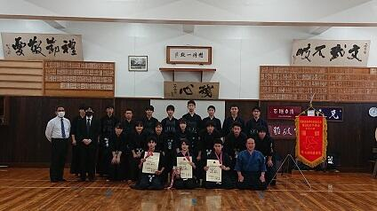

女子テニス部県大会へ
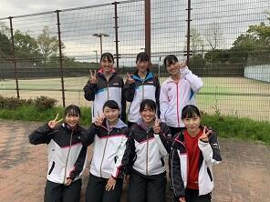4月13日,16日 下総運動公園で行われた地区大会で、個人シングルスで、豊田、松原の２名、個人ダブルスで、豊田･松原組、谷田部･森谷組、中村(光)･柴田組の３組が県大会出場を決めました。5月2日、3日に行われる県大会に向けてしっかり練習をしていきたいと思います。
電気部 全国高校eスポーツ選手権 ロケットリーグ部門参加
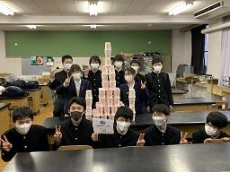
全国高等学校総合文化祭書道部門千葉県代表
 今月行われた千葉県高等学校総合文化祭書道部門において、来年度和歌山県で開催される全国高等学校総合文化祭書道部門（大会名「紀の国わかやま総文２０２１」）へ出品する千葉県代表生徒１１名を選ぶ審査会が行われ、本校の村嶋さんの作品「臨大聖武」が選ばれました。これから新たに３尺×８尺（約９０㎝×２４０㎝）のサイズの紙で出品作品を制作する予定です。
今月行われた千葉県高等学校総合文化祭書道部門において、来年度和歌山県で開催される全国高等学校総合文化祭書道部門（大会名「紀の国わかやま総文２０２１」）へ出品する千葉県代表生徒１１名を選ぶ審査会が行われ、本校の村嶋さんの作品「臨大聖武」が選ばれました。これから新たに３尺×８尺（約９０㎝×２４０㎝）のサイズの紙で出品作品を制作する予定です。
ソフトテニス部 新人大会地区予選男女Ｗ優勝＆県新人大会男女Wベスト16


弓道秋季通信錬成大会男子団体優勝

 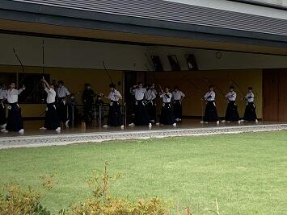
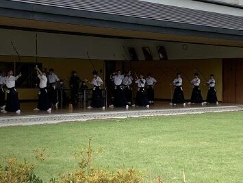 女子テニス部 県新人戦で２年連続ベスト８！
 10月13日・14日、県新人テニス大会が行なわれました。
10月13日・14日、県新人テニス大会が行なわれました。本校は１回戦 千城台に５－０、２回戦 千葉東に３－１、３回戦 東海大浦安に３－０で勝利し、ベスト８へ進みました。準々決勝では惜しくも学館浦安に０－３で敗れましたが、２年連続で県ベスト８に入り、来年度の関東大会県予選の出場権を獲得しました。今後も、県の上位を目指しさらに練習に精進していきたいと思います。
第73回全日本ﾊﾞﾚｰﾎﾞｰﾙ高等学校選手権大会（男子）地区予選優勝
 9月19日(土)・20日（日）に行なわれた第73回全日本ﾊﾞﾚｰﾎﾞｰﾙ高等学校選手権大会地区予選（男子）で見事優勝を果たし、県大会出場が決まりました。10月11日(日)に行なわれる県大会でもベストを尽くし、上位進出を狙います。
9月19日(土)・20日（日）に行なわれた第73回全日本ﾊﾞﾚｰﾎﾞｰﾙ高等学校選手権大会地区予選（男子）で見事優勝を果たし、県大会出場が決まりました。10月11日(日)に行なわれる県大会でもベストを尽くし、上位進出を狙います。 書のパフォーマンス発表会
女子テニス部新人戦地区大会団体優勝
9月15日・16日・18日に下総運動公園で行なわれた新人大会地区予選で、見事団体優勝を果たしました。その他、個人シングルスで豊田、松原の２名が、個人ダブルスで、豊田・松原組、谷田部・森谷組の２組が県大会出場を決めました。10月13日に行なわれる県大会での上位進出が期待されます！
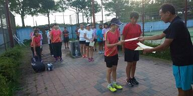
秋季千葉県高校野球大会ﾌﾞﾛｯｸ代表決定戦
 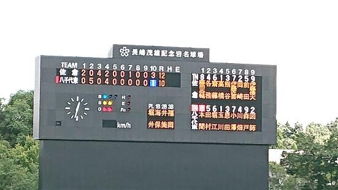
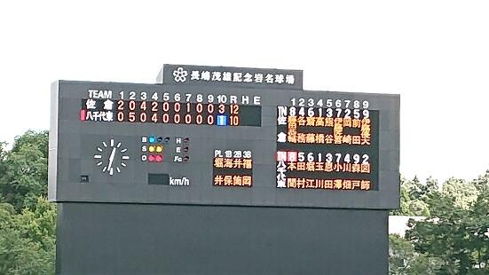8月27日、野球部は県大会出場をかけて八千代東高校と対戦しました。試合は乱打戦となり、延長へと突入しました。十回表、打撃好調の齋藤の２塁打、高橋のタイムリーなどでで３点を追加、八千代東を突き放し、県大会出場を決めました。